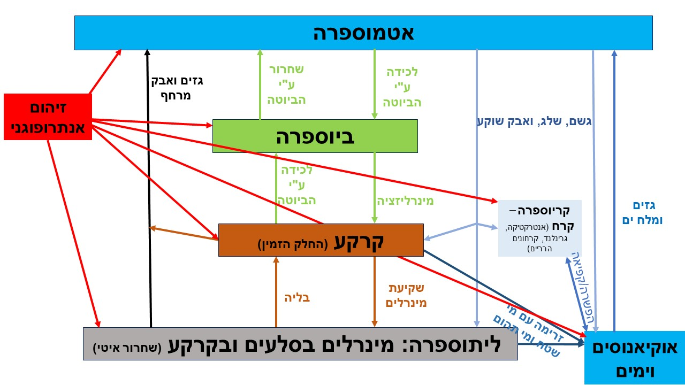
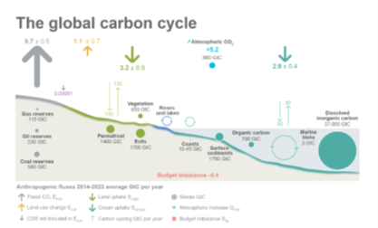
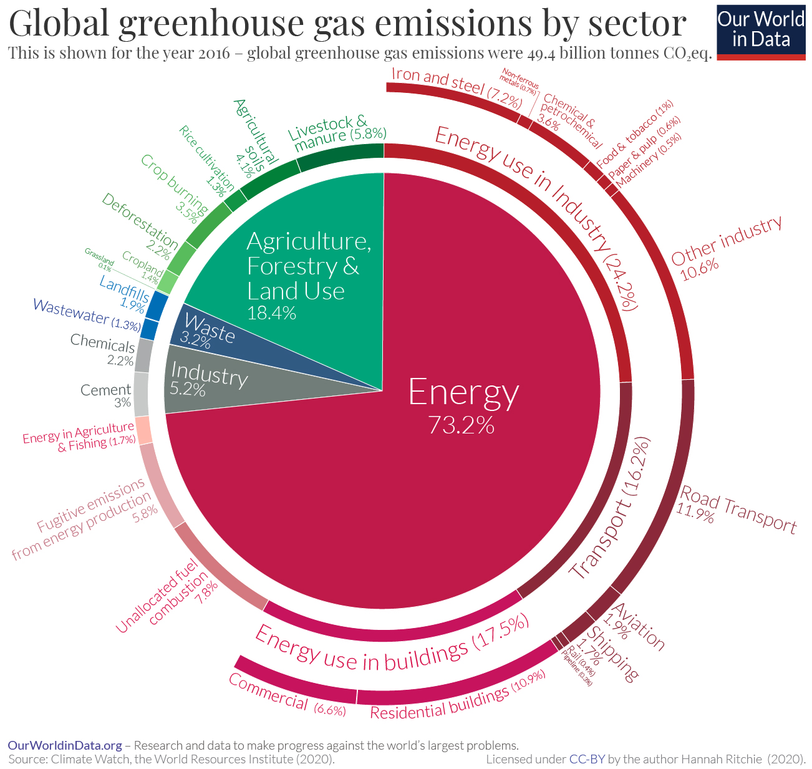
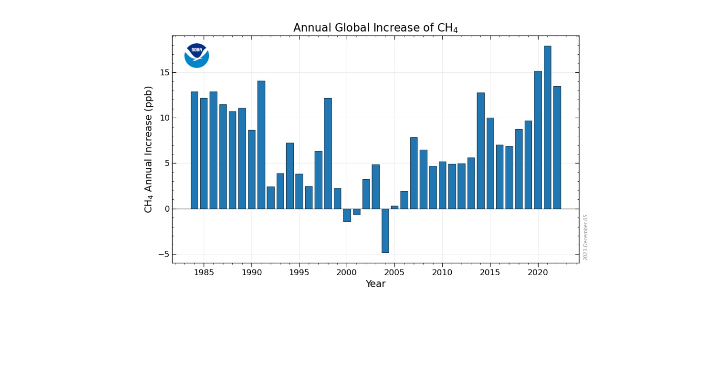
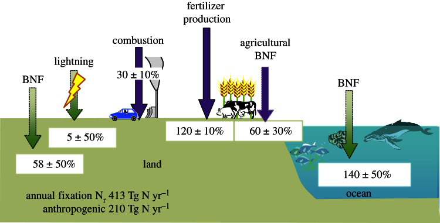
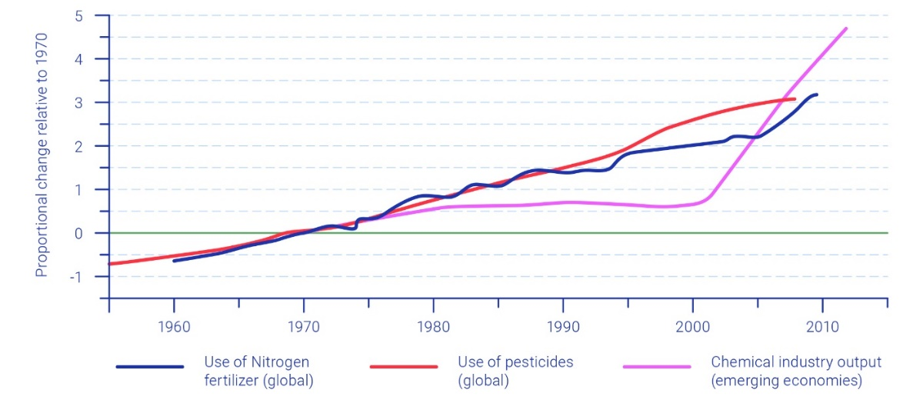
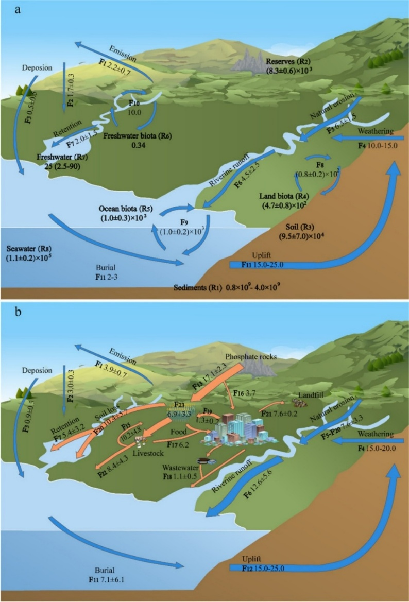
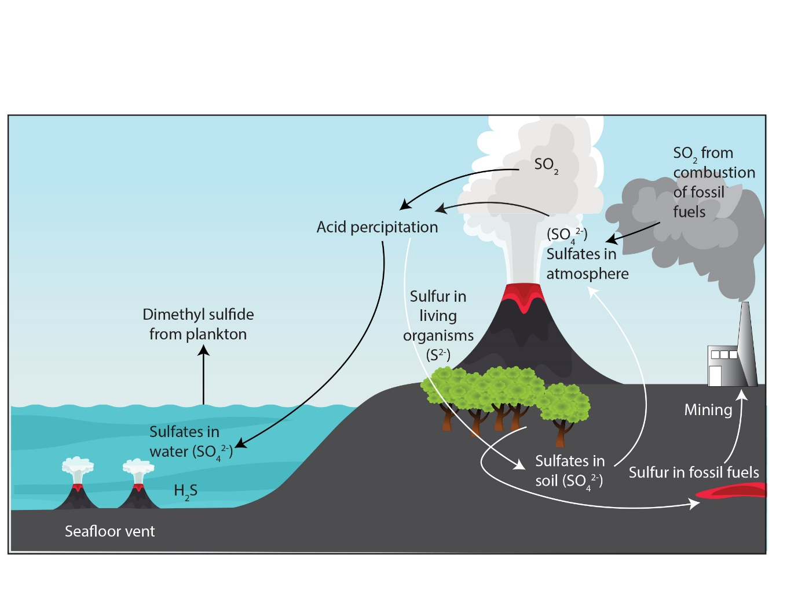
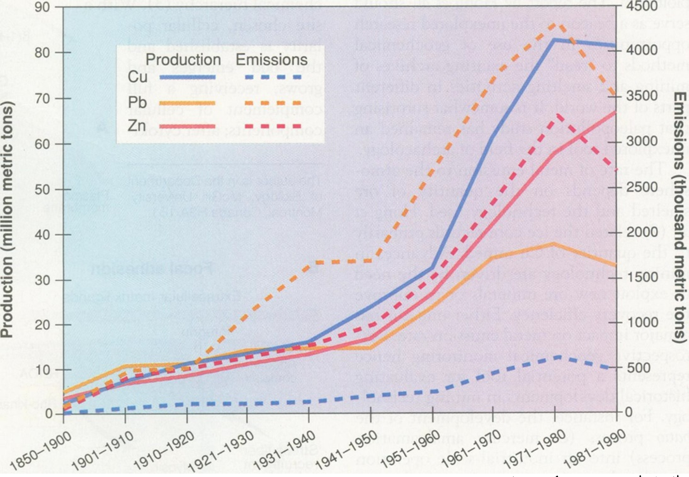
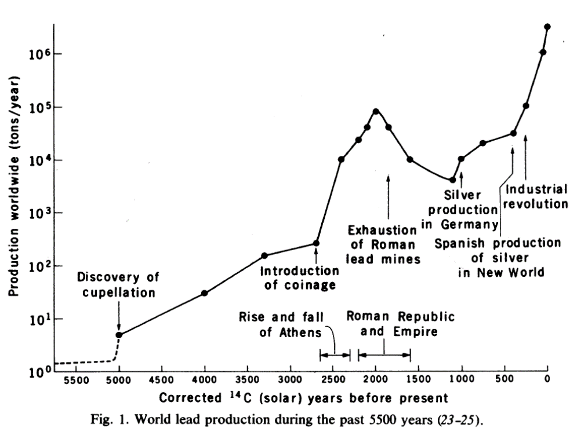

”Applied science and engineering technology,
these were the powers of darkness
which had poisoned land, air and water,
the forests, the animals, the cities,
and our own human cells.“
Saul Bellow, The Dean’s December, 1982.
5. מחזורים ביוגאוכימיים#
בשלושת הפרקים האחרונים (פרק 2 – חקלאות, פרק 3 - אנרגיה, פרק 4 - תעשיה וחומרי גלם) סקרנו את פעילויות בני האדם המשפיעות בצורה המשמעותית ביותר על הסביבה. בין יתר השלכותיהן פעילויות אלה גורמות לשינויים בשטפים (fluxes)[1] של תרכובות ויסודות כימיים (חומרי הזנה/נוטריינטים[2] ורעילים) בין ואל מרכיבי הסביבה השונים: אטמוספרה, ביוספרה, ליתוספרה – קרקעות וסלעים, קרח (קריוספרה), הידרוספרה - אוקיינוסים, נהרות ומי תהום. איור 5.1 מציג מעגל של שטפים, מקורות (sources) ומבלעים (sinks) עבור תרכובת או יסוד כימי והוא מייצג את המחזור הביוגאוכימי של אותה התרכובת או היסוד.[3] במסגרת פרק זה נתמקד בעיקר במאגרים הנמצאים על פני השטח של כדור הארץ: סלעי הקרום (החלק החיצוני של כדור הארץ), גופי מים והחיים בהם (כולל אוקיינוסים), אטמוספרה וביוספרה יבשתית (קרקעות, צמחים, מיקרואורגניזמים ובעלי חיים). אף שמחזורים ביוגאוכימיים הם תהליכים טבעיים הפועלים בכדור הארץ משחר קיומו, מחקרים מהעת האחרונה מצביעים על הפרה חמורה וחסרת תקדים של תהליכים אלו עקב פעילות אנושית אינטנסיבית.[4] על מנת לקבל תמונה מלאה יש להתייחס לשני המחזורים, הן הטבעי והן האנתרופוגני במקביל,[5] כאשר ההתייחסות צריכה להתבצע תוך בחינת המופע הכימי (זמינות ביולוגית) של היסוד הכימי או התרכובת בהם אנחנו דנים ותוך שימוש באנליזה של זרימת חומרים (MFA - material-flow analysis).[6]
אנחנו נתמקד במחזורים של מספר יסודות להם יש השפעה גדולה מאד על עולם החי (כולל בני האדם): פחמן (5.1), שהוא נוטריינט חשוב ובנוסף הוא מרכיב עיקרי בשני גזי החממה העיקריים, פד“ח ומתאן. לפחמן יש מופעים אורגנים ואי-אורגנים המשתלבים במחזורים של יסודות אחרים. הדיון במחזור הפחמן ישמש אותנו להצגת העקרונות המרכזיים בבחינה של מחזור ביוגאוכימי של יסוד כלשהו; חנקן (5.2) מייצג נוטריינטים שכמותם הכוללת איננה מוגבלת, אולם הוא מהווה נוטריינט מגביל (limiting nutrient)[7] בסביבות מסוימות. מצד שני, עקב שימוש לא מושכל, הפך החנקן למטרד סביבתי חמור.[8] בנוסף, חמצן דו חנקני (nitrous oxide) הוא גז חממה משמעותי; זרחן (5.3) מייצג נוטריינטים שכמותם הכוללת מוגבלת, ובמידה וצריכתו לא תנוהל כראוי, האנושות עלולה להתמודד עם מחסור. בנוסף, בדומה לחנקן, זרחן מהווה נוטריינט מגביל בסביבות מסוימות, ומצד שני עקב שימוש לא מושכל הוא הפך למטרד סביבתי חמור; גופרית (5.4), שמצד אחד היא נוטריינט, אולם בתנאי סביבה מסוימים היא רוכשת צורות כימיות מסוימות וריכוזים גבוהים ההופכים אותה לחומר רעיל ומזיק ביותר; עופרת (5.5) מייצגת שורה של מתכות שיש להן שימושים בתעשייה והביקוש להן צפוי לגדול בעשורים הקרובים (TCE = technology critical elements, ראו פרק 4). בנוסף, עופרת היא מתכת רעילה שהשימוש בה נמשך כבר אלפי שנה. סקירות של יסודות כימיים אחרים וחומרים מסונתזים אפשר למצוא בספרות המקצועית – למשל, ראו את רשימת המקורות במאמר של Sen & Peucker-Ehrenbrink.[9]
{kind=link}

Fig. 49 איור 5.1: סכמה של מחזור ביוגאוכימי בכדור הארץ. מלבנים: מקורות - sources ומבלעים - sinks. חיצים: שטפים – fluxes.#
פחמן (C)#
מחזור הפחמן הכללי#
בשנת 1957 פרסמו רוול (Ravelle) וזוס (Suess) מאמר שעסק בדינמיקה של פד“ח (פחמן דו חמצני – \(CO_2\)) במערכת אטמוספרה – אוקיינוסים - ביוטה. הם טענו שהאנושות עורכת ניסוי בקנה מידה גלובלי בנושא מחזור הפחמן וקראו לנצל את השנה הגיאופיזית (1.7.1957 – 31.12.1958) על מנת לקדם את תיעוד התופעה,[10] מה שאכן נעשה על ידי קבוצתו של קילינג (Keeling - ראו פרק 6).[11] מאז ועד היום מנסים מדענים רבים לתאר את מחזור הפחמן במלואו ולהגיע לתיאור של מחזור ”סגור“ הן בקנה מידה עולמי והן בקנה מידה אזורי.[12] כלומר מחזור פחמן הכולל תיאור מדויק של כל השטפים, המקורות והמבלעים של פחמן, הן טבעיים והן אנתרופוגנים.[13] איור 5.2 מציג גרסה עדכנית של מחזור הפחמן העולמי המתייחס הן לפחמן אורגני והן לפחמן אי-אורגני.
המאגרים של פחמן (מקורות - sources ומבלעים -sinks) בפני השטח של כדור הארץ (לא כולל סלעים) מופיעים באיור 5.2 כעיגולים. המאגרים של פחמן במעטפת כדור הארץ ובסלעי הקרום (10^13^ גיגה טון, ו-10^11\ ^גיגה-טון, בהתאמה)[14] שהם גדולים הרבה יותר מכל המאגרים המופיעים באיור, הושמטו מאיור 5.2, אם כי הם יוזכרו בעקיפין בהמשך. המאגר הגדול ביותר הוא פחמן אי-אורגני מומס במי ים (37,000 גיגה[15]-טון פחמן) ובהשוואה, מאגר הפחמן באטמוספרה מכיל כ-890 גיגה-טון פחמן. חשוב לציין שבשני המקרים הללו הפחמן קשור ליסודות נוספים (בעיקר חמצן) ובאטמוספרה הוא נמצא כמעט אך ורק כפד“ח (\(CO_2\)). עקב כך, יש לשים לב ליחידות המשקל. 890 גיגה-טון של פחמן באטמוספרה שקולים ל-890X3.7=3,293 גיגה-טון פד“ח. עתודות הדלקים הפוסיליים הניתנות לכריה הן בסדר גודל דומה של מספר מאות גיגה-טון פחמן. לעומת זאת מאגר הפחמן בקרקעות ובקרקעות קפואות (permafrost) מוערך בכמה אלפי גיגה-טון. חשוב לציין שמדובר בטווח של מספרים, עקב אי וודאות.
שטפי הפחמן בין המאגרים השונים מתוארים באמצעות חיצים, כאשר תחלופת פד“ח בין האטמוספרה ומי האוקיינוסים (המסת פד“ח במי ים ושחרור פד“ח ממי הים אל האטמוספרה) מעבירה כ-90 גיגה-טון מידי שנה. אלה כמובן מספרים מעוגלים ולמעשה השטפים אינם זהים לחלוטין. יש יותר מעבר של פד“ח מן האטמוספרה לים מאשר בכיוון ההפוך (כ-2.9 גיגה-טון פחמן יותר, ראו בהמשך). שטפים גדולים מעט יותר (כ-120 גיגה-טון בשנה) מעבירים פחמן בין הביוטה היבשתית לאטמוספרה פוטוסינתזה (photosynthesis)[16] מצד אחד ונשימה וחמצון חומר אורגני מצד שני. גם כאן המספרים מעוגלים והשטפים אינם זהים לחלוטין (ראו פרוט בהמשך). שטפים אלה גדולים בערך פי 10 מהשטף של פחמן לאטמוספרה בעקבות שריפת דלקים פוסיליים (9.7 גיגה-טון לשנה).
הפער בין השטפים שפורטו למעלה: אטמוספרה – אוקיינוס, ואטמוספרה – יבשה שווה בערך ל-4.0 גיגה-טון פחמן. כלומר, בכל מחזור של פחמן יש 4.0 גיגה טון עודפים של פחמן העוברים מן האטמוספרה אל היבשות והאוקיינוסים. רוב העדויות מצביעות על התהליכים הבאים כאחראיים לפער הזה: (1) לכידת פחמן מהאטמוספרה ביבשות (3.2 גיגה-טון בשנה) כתוצאה מתהליכים שאין תמימות דעים לגבי תרומתם היחסית: התארכות עונת הצמיחה עקב התחממות גלובלית ועלייה בצימוח (ראו פרק 8 - greening) וכן הצטברות של חומר אורגני מת (כולל מעשה ידי אדם).[17] העלייה בצימוח קשורה גם לדישון בחנקן של קרקעות חקלאיות ולא-חקלאיות וכנראה גם לדישון בפד“ח.[18] בהקשר הזה חשוב לשים לב למאמר שהתפרסם ב-2025 והראה כי היכולת של צמחים ביבשות לקבע פד“ח הגיעה לשיאה בשנת 2008 ומאז ישנה ירידה קלה. המאמר מתבסס על אנליזה של השינויים השנתיים בריכוזי פד“ח בעקומה של קילינג (Keeling) שמופיעה באיור 6.1א. ניתוחים דומים נעשו בעבר,[19] אולם המסקנות לא היו חד משמעיות כמו במאמר הזה; (2) המסת יתר של פד“ח במי האוקיינוסים (2.9 גיגה-טון בשנה) גורמת לתופעה הקרויה ”החמצת האוקיינוסים“, עליה נרחיב בפרק 10. בשנת 2026 התפרסם מאמר הטוען שחלק מהפד“ח המומס במי האוקיאנוס גורם להמסה מוגברת של קלציט וארגוניט[20] ולשחרור סידן הסותר חלק מהחומציות;[21] (3) פליטת פחמן מקרקעות לאטמוספרה (1.1 גיגה-טון לשנה) עקב שינוי יעוד קרקע כגון כריתת יערות, בינוי וסלילת כבישים המחישים את חמצון החומר האורגני בקרקע, וכן סחיפת קרקעות המלווה בחמצון החומר האורגני בקרקע הנסחפת. במילים אחרות, התהליכים הללו מסלקים במשותף מן האטמוספרה כמעט מחצית (3.2+2.9-1.1 = 4.0) מכמות הפחמן הנפלטת לאטמוספרה משריפת דלקים פוסיליים (9.7 גיגה-טון לשנה),[22] וממחישים את הבעיות הנוספות שגורמת שריפת דלקים פוסיליים מעבר להתחממות גלובלית (החמצת האוקיינוסים). בפרק 9 אנחנו נפרט לגבי התהליכים במחזור הפחמן המתרחשים בגופי המים ביבשות[23] ובפרק 10 ניגע בקצרה במחזור הפחמן באוקיינוסים: (1) החמצת האוקיינוסים; (2) חשיבות המשאבה הביולוגית (BCP)[24] למחזור הפחמן האורגני; ו-(3) תפקידי המערכת הקרבונטית של תהליכי המסה-השקעה של פחמן אי-אורגני.[25]
שימו לב לשטף הטבעי של פחמן ממעמקי האדמה (ממעטפת כדור הארץ) עקב פעילות וולקנית. שטף זה הוא זעיר בהשוואה לשטפים שהוזכרו קודם והוא עומד על כ-0.1 גיגה-טון לשנה, כלומר ככמאית מהשטף של שריפת דלקים פוסיליים. מאידך, שטף זה פועל במשך מיליארדי שנה (במהלכן שינה את עוצמתו מספר פעמים) והוא אחראי להספקת פד“ח לאטמוספרה. ללא נוכחות פד“ח באטמוספרה, הטמפרטורה של כדור הארץ היתה נמוכה בערך בשמונה מעלות בהשוואה לטמפרטורה הנוכחית (ראו את חישוביו של ג’יקובסון בפרק 6). לפני כארבעים שנה הציעו שתי קבוצות של חוקרים מודל המסביר את ריכוזי פד“ח באטמוספרה לפני התערבות בני האדם.[26] המקור העיקרי לפד“ח הוא כאמור פעילות וולקנית והמבלע העיקרי הם תהליכי בליה של מינרלים סיליקטיים[27] עשירי סידן ואחר כך שקיעה של סידן קרבונטי[28] בקרקעית הים. במילים אחרות, הסידן שהיה אצור במינרלים סיליקטיים בתוך סלעים כמו בזלות וגרניטים, מומס ומובל על ידי נהרות אל הים, שם הוא מגיב עם קרבונט שמקורו בהמסת פד“ח אטמוספרי. הסידן הקרבונטי שנוצר שוקע לקרקעית האוקיינוס ומסלק פד“ח מהאטמוספרה. ברוב המקרים התהליך נובע מפעילות ביולוגית של יצירת שלדים קרבונטיים. תהליכי הבליה מואצים כאשר ריכוז הפד“ח באטמוספרה עולה, הן בגלל התחממות כדור הארץ, והן בגלל שיותר פד“ח מומס במים ונוצרת יותר חומצה קרבונית (\(H_2CO_3\)) התוקפת את הסלעים שהמים נמצאים איתם במגע. כאשר ריכוז פד“ח באטמוספרה יורד, תהליכי הבליה מואטים, יש פחות סידן מומס ופחות פד“ח מסולק. כיוון שהפעילות וולקנית נמשכת כסדרה, ריכוז הפד“ח באטמוספרה עולה וכך חוזר חלילה (דוגמא למנגנון של משוב שלילי, ראו פרק המבוא). בגלל מספר גורמים שתקצר היריעה לפרטם כאן, תהליך זה של סילוק פד“ח מהאטמוספרה מגיע לערכו המרבי כאשר קצב הבליה הממוצע הוא כ-70 מטר למיליון שנה (עומק הסלע שמסולק מפני השטח במיליון שנה).[29] לפי המודל הזה, שינויי האקלים שקרו בכדור הארץ במיליוני השנים האחרונות, לפני התערבות האדם, נבעו משינויים בפעילות וולקנית שהשפיעה, יחד עם בליה, על ריכוזי פד“ח בטווחי זמן של מיליוני שנה. כל זה קרה במשולב עם שינויים בקרינת השמש ובמסלול כדור הארץ סביב השמש (מחזורי מילנקוביץ« - Milankovitch)[30] שהשתנו בטווחי זמן של עשרות עד מאות אלפי שנה (ראו פרק 6). בטווח זמן ארוך יותר של עשרות או מאות מיליוני שנה הושפע האקלים גם מנדידת היבשות עקב תנועת הלוחות המרכיבים את פני כדור הארץ, שהשפיעו על יעילות הזרימה באוקיינוסים ועל משטר הרוחות העולמי. נזכיר בקצרה בפרק 6 את שינויי האקלים בעבר הרחוק של כדור הארץ ונרחיב על יעילות הזרימה בים ועל משטר הרוחות העולמי. נחזור לזה גם בפרקים על הסביבה הימית (פרק 10) ועל האטמוספרה (פרק 11).
פליטות פחמן לאטמוספרה ממקורות אנתרופוגנים#
סך כל הפליטות של פחמן לאטמוספרה בעקבות הפעילות האנושית (חיצים של 9.7 ו-1.1 גיגה-טון לשנה באיור 5.2) מתחלקות בין פעילויות שונות של החברה האנושית כפי שהן מפורטות באיור 5.3. לפני שנדון באיור 5.3, חשוב להסביר מספר הבדלים בנתונים בינו לבין איור 5.2. על פי איור 5.2, סך כל הפליטה של פחמן עקב פעילות אנושית הוא כ-11 גיגה-טון (9.7 + 1.1) בשנה, כלומר כ-40 גיגה-טון פד“ח בשנה. מספר זה שונה מהמספר המופיע באיור 5.3 – 49.4 גיגה-טון פליטה של פד“ח עקב פעילות אנושית. יש מספר סיבות לפער הזה. קודם כל, איור 5.3 מתייחס ליחידות של פד“ח ושקול פד“ח, שמשמעותן היא שפליטות של מתאן וחמצן דו חנקני (nitrous oxide – \(N_2O\)) מתורגמות לפליטות פד“ח אחרי שנלקח בחשבון ששניהם גזי חממה יעילים יותר מפד“ח, ולכן השטפים שלהם מוכפלים פי 200 עד 300 עבור חמצן דו חנקני, ופי כמה עשרות עבור מתאן.[31] חמצן דו חנקני אינו מכיל פחמן ולכן אינו מופיע כלל באיור 5.2, ואילו השטף של מתאן אינו מוכפל משום שהאיור עוסק במחזור הפחמן ולא בגזי חממה.
באיור 5.3 נראה כי שלושה רבעים מפליטות גזי החממה מגיעים מצריכת אנרגיה ומתחלקים בצורה כמעט שווה בין צריכת אנרגיה בבניינים, בתחבורה ובתעשייה. פעילות חקלאית ושינוי שימושי קרקע פולטים כחמישית והשאר נפלט ממטמנות ומהפקת חומרי גלם, בעיקר פלדה, מלט וטקסטיל (ראו פרק 4).[32] למרות המעבר המואץ לאנרגיות מתחדשות, פליטות גזי חממה לאטמוספרה ממשיכות לטפס (בעיקר מתאן – ראו בהמשך).[33] גם הירידה בפליטות גזי חממה שקרתה בשנת 2020 בגלל מגפת הקורונה נעצרה, ובשנת 2021 פליטות גזי חממה עלו ב-2.1 גיגה-טון (פד“ח ושקול פד“ח) והגיעו לערך הגבוה ביותר שתועד עד אז.[34] הנתון המדאיג ביותר הוא שעלייה זו נבעה בעיקרה משריפת פחם, הדלק הפוסילי המזהם ביותר, כאשר סין היא האחראית העיקרית לגידול. באירופה ובארצות הברית דווקא נרשמה ירידה בפליטת גזי חממה ב-2021 בהשוואה ל-2019. במאי 2025 דווחה לראשונה ירידה בפליטות פד“ח בסין,[35] מה שנותן תקווה מסוימת.
מתאן הוא שחקן מרכזי בשטף של פחמן לאטמוספרה עקב פעילות אנושית, והוא גז חממה יעיל ביותר.[36] לאור זאת חשוב לשים לב שפליטות מתאן ממשיכות לגדול בשנים האחרונות (איור 5.4).[37] ריכוזו עלה כמעט פי שלוש מאז המהפכה התעשייתית והוא מתקרב לערכים של 2,000 חלקים לביליון (ppb) ב-2025.[38] בניגוד לפד“ח שהפליטות שלו התייצבו בחמש השנים 2019 - 2024, לגבי מתאן יש האצה בגידול הפליטות באותן השנים (איור 5.4). חלק מהגידול מיוחס לדליפות גז ממתקני ייצור אנרגיה, ממערכות הספקה וממתקני פסולת עירוניים (ראו פרק 12), וחלק נובע מגידול בפליטות מחקלאות. ריבוי המקורות, ואי הוודאות הקיימת לגבי הכמויות הדולפות מכל אחד מהם מחייבות שיפור ביכולת המעקב אחר הדליפות.[39] בנוסף, אלפי גיגה-טון של פחמן אצורים כחומר אורגני בקרקעות קפואות. עם ההתחממות הגלובלית, חלק מהקרקעות הללו מפשירות וכמויות הולכות וגדלות של מתאן משתחררות ומאיצות את קצב ההתחממות הגלובלית. זוהי דוגמא לתהליך של משוב חיובי הנמצא במוקד המחקר בעשורים האחרונים.[40] ב-2024 התפרסם מאמר המצביע על כך שישנה אי וודאות גדולה לגבי שטפים של מתאן (כולל קליטה של מתאן על ידי עצים),[41] ובעיקר של שטפים ממקורות טבעיים שחלקם מושפעים מפעילות בני האדם.[42] כמו כן הערכת המחברים היא שכ-76% מפליטות המתאן לאטמוספרה קשורות ישירות או באופן עקיף לפעילויות בני האדם. לכן, צמצום אי הוודאות הקיימת היא תנאי הכרחי בקביעת מדיניות להפחתה בפליטות של מתאן. נכון ל-2024 אין עדיין סימנים להתייצבות בפליטות או אף הפחתה המתבקשת של 30% (בין 2020 ו-2030) על מנת לעמוד ביעדי האקלים של ה-IPCC.[43] יתרה מזאת ב-2025 התפרסם מאמר הטוען שדליפות מתאן מקידוחי נפט וגז לא פעילים גבוהים פי שבע בממוצע מההערכות הקודמות.[44] אמנם המחקר נעשה רק בקנדה, אולם יתכן שמסקנותיו תקיפות לעוד ארצות. בשנת 2026 התפרסם מאמר שהראה שבשנים 2022-2020 היה שיא בעליית ריכוזי מתאן באטמוספירה והחל מ-2023 יש ירידה משמעותית בקצב עליית הריכוזים.[45] הסיבה לעלייה המהירה בשנים 2022-2020 המופיעה באיור 5.4 נובעת לדעת המחברים משילוב של שני גורמים: (1) ירידה בריכוזי רדיקל הידרוקסיל (hydroxyl radical **·**OH)[46] שהוא אחד המחמצנים החשובים באטמוספרה ואחראי על חמצון מתאן לפד“ח; (2) עלייה בקצב פליטות מתאן מביצות ומגופי מים בעיקר באפריקה ודרום מזרח אסיה עקב תנאי La Niña שהגבירו את המשקעים באזורים אלה. עוד דוגמא מעניינת לקשר המפתיע בין מערכות שונות בכדור הארץ. בשנת 2026 התפרסם מאמר שבחן מחדש את קצב החמצון (סילוק) של מתאן בסטרטוספרה, והראה שהוא גדול יותר מההערכות קודמות, מה שמשפר את ההבנה של מחזור המתאן באטמוספרה.[47]
אחת הדרכים הפופולריות לסלק פד“ח (המכיל פחמן) מן האטמוספרה היא על ידי נטיעת עצים בצורה מאסיבית שתביא להגברת שטף הפוטוסינתזה. להצעה זאת יש יתרונות רבים (ראו פרק 8) אולם יש איתה גם מספר בעיות: מציאת מספיק שטחים מתאימים לנטיעה, הקטנת האלבדו של היער בהשוואה לקרקע חשופה,[48] חמצון של עצים וענפים מתים המשחרר פד“ח לאטמוספרה ולאורך זמן כמותו משתווה לכמות שקיבעה הפוטוסינתזה. הדרך היחידה למנוע מצב כזה היא נטיעה וצימוח של עצים המלווה בעקירה והטמנה של העצים בצורה שתמנע את חמצונם לזמן ארוך.[49] במילים אחרות, צריך למנוע מהשטף של הנשימה והחמצון להשתוות לשטף הפוטוסינתזה למשך זמן ממושך. בנישה זו נכללת גם החקלאות המקיימת שמנסה להגדיל את אחוז הפחמן המקובע בקרקע לאורך זמן (ראו פרק 2).
{kind=link}

Fig. 50 איור 5.2: מחזור הפחמן הגלובלי. איור זה מדגיש את ההפרעה האנתרופוגנית שמתוארת על ידי חיצים. השטפים וגודלי המאגרים הטבעיים רשומים בקטן. היחידות של המאגרים הן גיגה-טון פחמן, והיחידות של השטפים הן גיגה-טון פחמן לשנה.#
מקור – Friedlingstein, P. et al. (2024) https://essd.copernicus.org/preprints/essd-2024-519/ © Author(s) 2020. Reprinted with permission.
{kind=link}

Fig. 51 איור 5.3: הפעילויות העיקריות הגורמות לפליטת גזי חממה ממקורות אנתרופוגנים.#
מקור - OUR WORLD IN DATA - https://ourworldindata.org/ghg-emissions-by-sector ; Reprinted with permission.
{kind=link}

Fig. 52 איור 5.4: שינויים בריכוזי מתאן באטמוספרה בעשורים האחרונים. 36 שנים עם עלייה בריכוזים ורק שלוש שנים עם ירידה בריכוזים.#
מקור – NOAA, https://gml.noaa.gov/ccgg/trends_ch4/ ; Reprinted with permission.
חנקן (N)#
מחזור החנקן המשולב במחזור הפחמן#
המחזורים הביוגאוכימיים של פחמן וחנקן כרוכים זה בזה (כמו גם זה של זרחן שיידון בהמשך) כיוון שהם נוטריינטים, חומרים הדרושים לבניית תאים חיים. שרשראות פחמן יוצרות את התשתית לחומר החי וחנקן מהווה מרכיב חשוב בסינתזה של חלבונים וחומצות אמיניות וכן משתתף בתהליכי נשימה בסביבות דלות או חסרות חמצן זמין. בסביבות מימיות ויבשתיות רבות חנקן זמין הוא הנוטריינט המגביל ולכן תוספת של חנקן זמין (למשל כדשן חקלאי) מגבירה יצרנות ראשונית (primary productivity)[50] ואת קיבוע הפחמן הנמצא בפד“ח. כך אכן קרה במאה וחמישים השנה האחרונות בהרבה סביבות יבשתיות.[51] מצד אחד, תוספת של כ-1.3 גיגה-טון של חנקן ממקורות אנתרופוגנים סייעה בקיבוע של כ-11 גיגה-טון של פחמן. מצד שני, עלייה בריכוזי פד“ח באטמוספרה באותה תקופה גרמו לקיבוע של כמות דומה של חנקן (\(CO_2\) fertilization). יש חשש שמחסור בחנקן יגביל את קיבוע הפחמן בעתיד עם המשך העלייה בריכוז פד“ח באטמוספרה. יתרה מזאת, לאחרונה דווח שעליה בריכוז פד“ח באטמוספרה אחראית לירידה בקצב קליטת חנקן על ידי צמחייה יבשתית, מה שפוגע בקצב הצימוח.[52]
מעברי חמצון – חיזור של חנקן ופחמן#
מחזור החנקן בטבע מאופיין במעברים בין מופעים כימיים שונים הנגרמים על ידי חילופי אלקטרונים בין חנקן ליסודות אחרים (תהליכי חמצון-חיזור). תהליכי חמצון-חיזור מאפיינים גם את מחזור הפחמן, אולם נושא זה לא הוזכר שם. שני היסודות, פחמן וחנקן מסוגלים לשנות שמונה מצבי חמצון (הנובעים מרכישה או ויתור על אלקטרונים). התרכובות המחומצנות שלהם, בהן הם נמצאים במצב חמצון גבוה (לאחר שוויתרו על כל האלקטרונים החיצוניים), הן: (1) פד“ח וקרבונט בהם הפחמן נמצא במצב חמצון +4 ותורם 4 אלקטרונים לאטומי חמצן הקשורים אליו. (2) ניטרט (\(NO_3^-\)) בו מצב החמצון של החנקן הוא +5. שני היסודות מסוגלים לרכוש אלקטרונים בחזרה בתהליך הנקרא חיזור, וליצור תרכובות בהן הם נעשים עתירי אלקטרונים (מחוזרים), עבור פחמן (מצב חמצון -4): מתאן (\(CH_4\)) ותרכובות אורגניות רבות (אבל לא כולן); ועבור חנקן (מצב חמצון -3): אמוניה (\(NH_3\)) או יון אמוניום (\(NH_4^+\)). לשניהם יש תרכובות רבות בהן הם נמצאים במצבי ביניים מבחינת מצב החמצון שלהם למשל, +2, +1, 0, -2.
מבחינה כימית וסביבתית, למעברים בין מצבי חמצון של חנקן ופחמן יש השלכות דרמטיות ונתייחס אליהן בהמשך הדיון. נציין שוב את החמצן הדו חנקני (nitrous oxide – \(N_2O\)), שהוא גז חממה יעיל ביותר (פי 200 עד 300 יותר מפד“ח) ומשתתף בהרס האוזון הסטרטוספרי (ראו פרק 11). לפני כעשור נעשה מאמץ מרוכז לקבץ את הידע המדעי על מחזור החנקן ו-15 מאמרים של טובי המומחים בתחום רוכזו בגיליון של העיתון Philosophical Transactions of the Royal Society of London . המשך הדיון על מחזור החנקן מתבסס במידה רבה על המאמרים שפורסמו בגיליון זה. [53]
קיבוע חנקן – העברת חנקן מהאטמוספרה למאגרים אחרים#
מרבית החנקן של פני השטח של כדור הארץ נמצא כחנקן מולקולרי גזי באטמוספרה (N~2\ ~– מצב חמצון 0), וכמותו היא כ-4 מיליון גיגה-טון, לעומת כ-3,350 גיגה-טון פד“ח הנמצאים באטמוספרה. החנקן המולקולרי באטמוספרה יציב ביותר כיוון שבין שני אטומי החנקן יש קשר משולש, שלא במהרה ינתק. לכן החנקן המולקולרי באטמוספרה אינו משתתף בראקציות כימיות וכמעט אינו זמין מבחינה ביולוגית. השטפים העיקריים הטבעיים והאנתרופוגנים, של חנקן בפני השטח של כדור הארץ מוצגים במאמר של פאולר (Fowler) ושותפיו מ-2013.[54] השטף הראשון (איור 5.5) מתאר העברת חנקן אטמוספרי שאינו זמין ואינו ראקטיבי למאגרים של חנקן זמין (ראקטיבי - N~r~). חשוב לשים לב לגודלם של השטפים בהשוואה למאגר הגדול הרבה יותר של חנקן באטמוספרה וכן לעובדה ששטפי החנקן קטנים בערך פי 100 משטפי הפחמן. מרבית השטפים הללו נובעים מפעילות של סוגי מיקרואורגניזמים שונים (היחידות הן מגה-טון בשנה = מיליון טון בשנה = אלפית גיגה-טון בשנה).[55]
ארבעה תהליכים (שלושה טבעיים ואחד אנתרופוגני) מעבירים חנקן מן האטמוספרה לפני השטח בים וביבשה. התהליך הראשון הוא קיבוע חנקן ביולוגי (BNF – Biological N Fixation). זהו תהליך מיקרוביאלי (על ידי מיקרואורגניזמים) ההופך באמצעות חיזור (תוספת אלקטרונים לחנקן) חנקן אטמוספירי (\(N_2\)) בלתי זמין ביולוגית לאמוניה (\(NH_3\)) הזמינה לביוטה באוקיינוסים וביבשות. בעוד שאמוניה בקרקע ובסדימנט אוקיאני מחוסר חמצן יציבה יחסית, בסביבות מחומצנות האמוניה מתחמצנת לניטרט על ידי מיקרואורגניזמים, בתהליך הנקרא ניטריפיקציה (nitrification).[56] בתהליך השני, כמות קטנה בהרבה של חנקן אטמוספרי עוברת קיבוע על ידי ברקים, בעיקר לניטרט.
תהליך ההעברה השלישי הוא שקיעה (deposition) של חלקיקים אטמוספריים המכילים תרכובות חנקן (בעיקר חלקיקים עשירי אמוניה וניטרט, ותרכובות חנקן אורגני) שנפלטו קודם אל האטמוספרה (לא מצוין במפורש באיור 5.5). התהליך הרביעי הוא אנתרופוגני. לתהליך שלושה מרכיבים: (1) שקיעה של תרכובות שנפלטו מתהליכי בעירה של דלקים פוסיליים (כ-30 מגה-טון - מצוין באיור 5.5). הפליטות הללו משחררות מגוון של תרכובות חנקן, האחראיות על תופעות כגון גשם חומצי וערפיח (smog) - ראו פרק 11; (2) קיבוע חנקן ביולוגי (BNF) על ידי צמחי תרבות וחקלאות; (3) ייצור דשני חנקן (מבוססי אמוניה) מחנקן אטמוספרי באמצעות ריאקציית הבר-בוש (Haber-Bosch), עליה פרטנו בפרק 4. ייצור דשן כיום מקבע בערך פי שתיים יותר חנקן לעומת תהליך הקיבוע הטבעי ביבשות וכמות דומה לקיבוע החנקן על ידי מיקרואורגניזמים ימיים.[57]
חלק ניכר (כשליש) מהחנקן המקובע בתהליך הבר-בוש מתחמצן לניטרט שהיא תרכובת מסיסה מאד הזולגת מהסביבה החקלאית לשטחי בר ולגופי מים יבשתיים ולאוקיינוסים. בגופי המים הניטרט המומס זמין למיקרואורגניזמים כמו אצות ובקטריות ומעודד יצרנות ראשונית (primary productivity)[58] היכולה לגרום במקרים מסוימים לאאוטרופיקציה (eutrophication).[59] אאוטרופיקציה מתבטאת בהצטברות חומר אורגני חלקיקי ומסיס הגורם לעכירות של גוף המים, לצריכת כל החמצן המומס במים וליצירת גוף מים מחוזר, עשיר בחומר אורגני ובסולפידים (ראו המשך הפרק וכן פרק 9). זאת בנוסף לזליגה של ניטרט למי תהום, מה שמהווה גורם מרכזי בזיהום מי תהום (ראו פרק 9). בהקשר זה חשוב לתת את הדעת לשימוש ההולך וגובר בחנקן כדשן חקלאי (איור 5.6) ולרגולציות בנושא (ראו גם פרק 2).[60] בסך הכל, כמות החנקן המקובעת בתהליכים טבעיים (כ-205 מגה-טון בשנה) זהה בערך לכמות החנקן המקובעת על ידי פעילות בני האדם (כ-210 מגה-טון בשנה: מנועי שריפה פנימית + קיבוע על ידי צמחי תרבות + דישון - איור 5.5). הערכות שונות במקצת של שטפי BNF מצמחיה יבשתית ומחקלאות מופיעים במאמר משנת 2025.[61]
{kind=link}

Fig. 53 איור 5.5: שטפים של קיבוע חנקן אטמוספירי והפיכתו לחנקן ראקטיבי. BNF – Biological N Fixation). Tg = 1012 g = 106 ton = mega-ton = 0.001 giga-ton)#
מקור - Fowler, D. et al. (2013) https://royalsocietypublishing.org/rstb/article-abstract/368/1621/20130164/22158/The-global-nitrogen-cycle-in-the-twenty-first?redirectedFrom=fulltext © Published by the Royal Society. All rights reserved. Reprinted with permission.
BNF – Biological N Fixation). Tg = 10^12^ g = 10^6^ ton = mega-ton = 0.001 giga-ton)
מקור -
Fowler, D. et al. (2013) https://royalsocietypublishing.org/rstb/article-abstract/368/1621/20130164/22158/The-global-nitrogen-cycle-in-the-twenty-first?redirectedFrom=fulltext
© Published by the Royal Society. All rights reserved. Reprinted with permission.
{kind=link}

Fig. 54 איור 5.6: שינוי בכמויות של דשן-חנקני, חומרי הדברה, ותוצרי התעשייה הכימית בהשוואה ל-1970.#
מקור - United Nations Environment Programme (2021) https://www.unep.org/resources/making-peace-nature ; © 2024 UNEP. Reprinted with permission.
השפעת הפעילות האנושית על מחזור החנקן#
מספר מאמרים שפורסמו בעשרים השנה האחרונות ניסו להשוות את מחזור החנקן הנוכחי לזה שקדם למהפכה הירוקה של המאה העשרים (ראו פרק 2). המסקנה בכולם היא שהאנושות משפיעה על כמויות החנקן העובר מן האטמוספרה למאגרים אחרים, כפי שהראנו קודם. בנוסף התרחשו תהליכים נוספים: (1) הגעת חנקן אל מערכות אקולוגיות ימיות ויבשתיות גרמה לאאוטרופיקציה ו“הורקה“ (greening, eutrophication),[62] (2) יצירת גז חממה יעיל שגם משתתף בהרס האוזון הסטרטוספרי (nitrous oxide – \(N_2O\) – ראו פרקים 6 ו-11), (3) זיהום מקורות מים על ידי ניטרט – \(NO_3^-\); (4) זיהום אוויר (,NO, \(NO_2\), HONO \(NO_3\) – ראו פרק 11). המאמרים הללו מנבאים שההשפעות של ייצור תרכובות חנקן פעילות ימשיכו ללוות אותנו בעשורים ואולי גם במאות השנים הבאות אם לא נשכיל למתן את השימוש בדשן עתיר-חנקן ולמצוא דרכים למחזר את החנקן המשמש כדשן.[63]
מיקרואורגניזמים מימיים (בקטריות וארכיאה[64]) באוקיינוסים, בגופי מים יבשתיים (אגמים, נהרות) ובקרקעות (כולל מעובדות) משתתפים באופן פעיל במחזור החנקן ואחראים על קיבוע כ-260 מגה-טון חנקן אטמוספרי מידי שנה (איור 5.5). מצד שני, מיקרואורגניזמים משתתפים בתהליך חיזור ניטרט והפיכתו לחנקן מולקולרי (\(N_2\)) החוזר לאטמוספרה. תהליך זה נקרא דניטריפיקציה (denitrification).[65] תהליך הדניטריפיקציה מתרחש בסביבות בהן ריכוז החמצן המומס והזמין יורד (הן בקרקעות והן בגופי מים). כיוון שניטרט הוא המחמצן היעיל ביותר אחרי חמצן, הוא משתתף במטבוליזם[66] של סוגי מיקרואורגניזמים המתפתחים באזורים של חמצן נמוך. תהליך הדניטריפיקציה מורכב ממספר שלבים ונוצרים בו כמה תוצרי ביניים, כולל \(N_2O\) (nitrous oxide - חמצן דו חנקני)[67] שהוזכר קודם, הנפלט לאטמוספרה. כ-30% מפליטות החמצן הדו חנקני מגיעות מפעילות מיקרוביאלית באוקיינוסים והשאר ביבשות. כיוון שמסיסות חמצן במים פוחתת עם העלייה בטמפרטורה, התחממות האוקיינוסים תגדיל את תפוצתם של אזורים עם חמצן נמוך (oceanic oxygen minimum zones) וכתוצאה מכך תגביר את פליטת החמצן הדו חנקני, שיגביר את ההתחממות הגלובלית. זאת דוגמא נוספת של תהליך משוב חיובי שעלול להתרחש בעתיד הקרוב.[68]
זרחן (P)#
מקור הזרחן והמופע שלו בסביבה#
זרחן, כמו פחמן וחנקן, מהווה מרכיב חיוני ומרכזי בבניית התא החי, ולכן גם הוא שייך לקבוצת הנוטריינטים העיקריים (נרחיב על הנושא הזה בפרק 8). זרחן משתתף בבנייה של DNA, RNA, ATP-ADP,[69] שלד ועוד. לכן, אחד השימושים העיקריים של בני האדם בזרחן הוא כמרכיב בחומרי הדישון.[70] בניגוד לפחמן וחנקן, זרחן נמצא על פני השטח של כדור הארץ כמעט אך ורק כמוצק או כמומס במים, בעיקר כפוספט (\(PO_4^{3-}\)) ואינו נמצא כמעט בפאזה הגזית. השטפים של זרחן קטנים בערך פי עשרת אלפים מהשטפים של חנקן, ופי מיליון מהשטפים של פחמן (איור 5.7). התנועה של זרחן באטמוספרה היא באמצעות חלקיקים מוצקים המרחפים ונישאים ברוח, לעיתים למרחקים גדולים.[71] יש גם עדויות שרוח יכולה לסלק חלקיקים עשירי זרחן משדות שדושנו ולפגוע ביעילות הדישון מחד, ומאידך לגרום להגעת זרחן למערכות אקולוגיות טבעיות בהן איננו נחוץ.[72] הבדל נוסף בין זרחן לפחמן ולחנקן הוא המקור העיקרי למחזור הביוגאוכימי של כל אחד מהם. במקרה של זרחן, מקורו במינרלים המכילים זרחן בריכוזים שונים והנמצאים בסוגים רבים של סלעי כדור הארץ, בעוד שהמקורות העיקריים של פחמן וחנקן נמצאים בפאזה הגזית והמומסת שלהם. בחלק הטבעי של מחזור הזרחן, מינרלים אלה עוברים בליה ומשחררים זרחן לקרקעות ולמים.[73] עד לאחרונה היה מקובל להניח שבניגוד לפחמן וחנקן, זרחן אינו עובר תהליכי חמצון-חיזור בטבע. הנחה זאת נבעה מכך שבקרקע זרחן נמצא תמיד במצב ערכי +5. יון הפוספט (\(PO_4^{3-}\)) נמצא בשריג של חלקיקים עשירי סידן (אפטיט), ספוח לחלקיקי ברזל או קשור לחומר אורגני. במים זרחן נמצא ברובו כיון אורתו-פוספט orthophosphate: \(H_2\)P\(O_4\)^-^ and HP\(O_4\)^2-^)). אולם, ב-2015 דווח שאוכלוסיות מסוימות של מיקרואורגניזמים ימיים מחזרות את הזרחן ממצב חמצון +5 למצב חמצון +3.[74] המחזור האנתרופוגני מתחיל בכרייה של זרחן מסלעים המכילים מינרלים עשירי זרחן (בעיקר אפטיט - \(Ca_5(PO_4)_3(Cl/F/OH)\)). גם בישראל כורים ומשתמשים בסלעים עשירי אפטיט, בעיקר בנגב המזרחי. לאחרונה, עלתה הצעה למצות זרחן תלת-ערכי מסלעים סרפנטינים[75] אולטרה-מאפיים על מנת לפתור את המחסור הצפוי בזרחן (ראו בהמשך).[76]
הבעיות הסביבתיות בעקבות הפקת זרחן והשימוש בו#
כריית זרחן והשימוש בו כדשן יוצרת שלוש בעיות סביבתיות: (1) פגיעה בנוף, בחי, בצומח ובתושבים החיים בסמוך או במורד הרוח מאזור הכרייה (ראו המקרה של שדה בריר),[77] וכן שחרור מזדמן אל הסביבה של חומצות המשמשות בתהליכי כרייה (ראו המקרה של אסון נחל אשלים).[78] (2) דליפה של זרחן משדה המטרה לאזורים סמוכים ולגופי מים והשתתפות הזרחן יחד עם חנקן, בתהליכי אאוטרופיקציה שהוזכרו קודם. (3) בעיית המשאב המתכלה. בעיית המשאב המתכלה טופלה לראשונה על ידי הוברט (Hubbert) לגבי דלקים פוסיליים (ראו פרק 3) והורחבה מאוחר יותר לגבי משאבים מתכלים נוספים, כולל זרחן.[79] חלק מהחוקרים טוענים שאנחנו עומדים להגיע לשיא בייצור זרחן בעשור הקרוב, ואחריו יכולת ההפקה עלולה לרדת.
השתתפות זרחן בתהליכי אאוטרופיקציה של גופי מים זכתה לתשומת לב רבה בעשורים האחרונים.[80] מקובל להניח שהנוטריינט המגביל, לעיתים זרחן ולעיתים חנקן, הוא האחראי העיקרי לבעיה. אולם בהרבה מקרים הבעיה סבוכה יותר. למשל, עבור אצות כחוליות (cyanobacteria) החנקן האטמוספרי זמין ולכן הזרחן הוא על פי רוב הגורם המגביל. לעומת זאת, עבור סוגי אצות אחרות החיות באותו גוף מים גם החנקן יכול להיות גורם מגביל. בסביבות אוקיאניות מסוימות בהן יש מספיק חנקן וזרחן, דווקא ברזל הוא הנוטריינט המגביל (נרחיב על כך בפרק 10). ישנם מקרים בהם יש די זרחן במערכת, אולם הוא זמין רק לחלק מהצמחים, בזכות סימביוזה המתקיימת בסביבת השורשים (מיקוריזה - mycorrhiza).[81] סימביוזה המתרחשת בין הצמח לבין סוגים מסוימים של פטריות היודעות להפוך זרחן ונוטריינטים אחרים לזמינים.[82]
בעקבות המחסור במרבצים עשירים יאלצו חברות הכרייה לפנות למרבצים ירודים, מה שירחיב את הפגיעה הסביבתית. במקביל, נעשים מאמצים למצוא דרכים להפיק זרחן ממקורות מתחדשים. נעשה שימוש בשאריות של גידולים, תוך שימוש בטכניקות של חקלאות מקיימת.[83] יש כוונה להפיק זרחן מעצמות של בעלי חיים שנשחטו.[84] ישנם גם ניסיונות למצות זרחן משפכים,[85] בין היתר באמצעות השקעה של המינרל סטורביט (\(NH_4\)MgP\(O_4\)·6\(H_2O\) - Struvite).[86] במקביל, נעשה מאמץ רב לשיפור הניצולת של זרחן המוסף כדשן לשדות,[87] כאשר דווח שזרחן הנמצא בדשן אורגני זמין יותר לצמחים מאשר זרחן הנמצא בדשן אי-אורגני.[88] מאמצים אלה נעשים על מנת להפחית את דליפתו למערכות טבעיות, כדי לדחות את הקץ מבחינת המחסור בזרחן, ומתוך הבנה שבגלל מסיסותו הנמוכה, זרחן שהוסף בעודף בעבר ימשיך להיות מטרד סביבתי גם שנים ארוכות אחרי שאספקתו פחתה.[89] למרות המאמצים הללו ריכוז הזרחן במי נהרות המנקזים שדות חקלאיים (בארצות הברית) לא ירד בעשורים האחרונים, אם כי הוא ירד במי נהרות המנקזים שטחים עירוניים.[90]
{kind=link}

Fig. 55 איור 5.7: מחזור הזרחן העולמי. (a) המחזור הטבעי, (b) הטבעי + השפעת בני האדם. יחידות השטפים: Tg P/year. יחידות המאגרים: Tg P. החיצים הכחולים מייצגים שטפים טבעיים, חיצים כתומים מייצגים שטפים המושפעים או נשלטים על ידי פעילות בני אדם. Tg = טרה-גרם = קילו-טון = 103 טון.#
מקור – Yuan Z., et al. (2018) https://doi.org/10.1021/acs.est.7b03910 ; Copyright © 2018, American Chemical Society. Reprinted with permission.
גופרית (S)#
מחזור הגופרית בטבע, בדומה לפחמן וחנקן, כולל מעברי חמצון-חיזור וכן מעברים בין האטמוספרה, האוקיינוסים, גופי מים יבשתיים, קרקעות, סדימנטים וביוטה. בדומה לזרחן מחזור הגופרית כולל גם תרומה מבליה וכריה של סלעים עשירי גופרית (בעיקר גבס ומינרלי בצר, איור 5.8). השטפים הטבעיים והאנתרופוגנים של גופרית (עשרות מגה-טון בשנה) דומים בגודלם לשטפים של חנקן.[91] מאז המהפכה התעשייתית תורמת הפעילות האנושית חלק משמעותי ממחזור הגופרית העולמי בעיקר עקב שריפת דלקים פוסיליים. בסוף המאה העשרים העריכו חוקרים שבין 45 ל-65 מגה-טון של גופרית אנתרופוגנית נפלטת מידי שנה לאטמוספרה, ומהווה בין שליש למחצית מהכמות הכוללת של גופרית הנפלטת לאטמוספרה.[92] מחזור הגופרית בעבר הגיאולוגי נחקר רבות משום שלגופרית יש איזוטופים יציבים (כמו לפחמן ולחנקן)[93] שריכוזיהם היחסיים משקפים תהליכים המתרחשים בכדור הארץ, כולל תהליכים מרכזיים בהתפתחות החיים. לגופרית יש שימושים רבים בתעשייה, בבניה ובחקלאות המהווים מקורות פליטה נוספים של גופרית.
תהליכים סביבתיים חשובים בהם משתתפת הגופרית#
בדומה לפחמן, חנקן וזרחן, גופרית היא נוטריינט ומשתתפת בבניית חומצות אמיניות ומהווה גורם מסייע (cofactor)[94] ביצירת חלבונים ותרכובות אחרות בתא. בנוסף, בדומה לחנקן גופרית משתתפת בנשימה של מיקרואורגניזמים בתנאים של מחסור בחמצן בניגוד לפחמן המשתתף בנשימה גם בנוכחות חמצן. גם המחזור הביוגאוכימי של גופרית כרוך בשינוי מצבי חמצון, והיא נעה בין סולפט (\(SO_4^{2-}\)), במצב חמצון +6 לסולפיד בו היא נמצאת במצב חמצון -2 (HS^-^), עם מספר רב של מצבי ביניים. תכונותיה הכימיות, מידת המסיסות שלה, רעילותה והזמינות הביולוגית שלה מושפעות כולן ממעברים הללו.
ישנם מספר תהליכים נוספים במחזור הגופרית שראוי להדגיש: (1) מינרליזציה של גופרית אורגנית לגופרית אי-אורגנית, שיכולה להישאר מומסת במים או לשקוע עם יסודות אחרים וליצור מינרלי גופרית: סולפידים במקרה של גופרית מחוזרת, וסולפטים במקרה של גופרית מחומצנת, או גם גופרית אלמנטרית; (2) אסימילציה של גופרית אי-אורגנית המנוצלת על ידי מיקרואורגניזמים. זהו תהליך הפוך למינרליזציה ובו הגופרית משולבת במרקם של החומר האורגני המסונתז ומהווה חלק מכמה חומצות אמיניות; (3) גופרית נפלטת כגופרית דו חמצנית (\(SO_2\)) גזית מהרי געש, משריפה של דלקים פוסיליים ושל ביומסה;[95] (4) גופרית דו חמצנית הופכת לסולפט באטמוספרה (פרוט בפרק 11) ויוצרת גשם חומצי וערפיח (בדומה לניטרט – ראו פרק 11) (5) מעל ובקרבת האוקיינוסים יש תרומה משמעותית של גופרית ממלח ים (סולפט) שהוא חלק מקצף הגלים; (6) פליטה של תרכובות גופרית מחוזרות, בעיקר די-מתיל סולפיד (DMS -(dimethyl sulfide מהאוקיינוסים לאטמוספירה. DMS נוצר מפרוק של תרכובות אורגניות המסונתזות על ידי מיקרואורגניזמים ימיים כחלק מהתמודדותם עם מליחות משתנה באוקיינוס, וכן ממקורות אנתרופוגנים (תעשיית הנייר, שריפת ביומסה ועוד). בנוסף, carbonyl sulfide) COS) נפלט מפעילות מיקרוביאלית ופוטוכימית באוקיינוסים, מרכסים מרכז אוקיאניים (וולקניזם תת-מימי) וממקורות אנתרופוגנים (ייצור אלומיניום, שחיקת צמיגים, שריפת פחם, ועוד) ומגיע גם הוא לאטמוספרה. באטמוספרה תרכובות גופרית אלו מתחמצנות לגופרית דו חמצנית שמשתתפת במגוון ריאקציות המשפיעות על הסביבה והאקלים (פרק 11).
גופרית ותאוריית גאיה (Gaia)#
פליטת DMS על ידי מיקרואורגניזמים ימיים נקשרת לאחת ההיפותזות המעניינות על הקשרים המורכבים ורבי הפנים שבין הביוטה והסביבה. היפותזת גאיה (Gaia)[96] של לבלוק (Lovelock) ומרגוליס (Margulis) טוענת שהביוטה משתתפת בצורה פעילה בשמירה על תנאי חיים אופטימליים על פני כדור הארץ (ראו גם פרק 7). תקצר היריעה מלהרחיב על טענותיה של היפותזת גאיה, אבל בהקשר של מחזור הגופרית, היא טוענת לקיום מנגנון של משוב שלילי בין טמפרטורת המים העליונים באוקיינוסים ופעילות מיקרואורגניזמים החיים בהם. היפותזת גאיה גורסת שכאשר קורית התחממות גלובלית, יש אידוי מוגבר של מי השטח באוקיינוסים משני עברי קו המשווה, וכתוצאה מכך המים נעשים מלוחים יותר. על מנת להתמודד עם המליחות הגדלה, מיקרואורגניזמים בגוף המים מסנתזים מולקולות מסוימות המעלות את הלחץ האוסמוטי[97] של התא. תרכובות אלה מתפרקות ויוצרות DMS שנפלט לאטמוספרה, מתחמצן, והופך לסולפט היוצר חלקיקים מרחפים המחזירים חלק מקרינת השמש (מגדילים את האלבדו) וגורמים להתקררות. בעקבות ההתקררות, האידוי פוחת, אתו פוחת הצורך לסנתז מולקולות המעלות את הלחץ האוסמוטי, פחות DMS נפלט, וחוזר חלילה. עם זאת, בשנים האחרונות פורסמו מספר מחקרים שבחנו את הניבוי הזה של היפותזת גאיה. רובם מצאו שככל הנראה המנגנון שהוצע איננו משמעותי,[98] אולם לאחרונה התפרסם מאמר הטוען אחרת.[99].
יצירת תשטיפים חומציים#
גופרית נמצאת גם בסלעי כדור הארץ, כסולפט בסלעי גבס וכסולפיד בסלעי בצר, שהם סלעים המכילים ריכוז גבוה של מינרלים עשירים במתכות כמו ברזל, נחושת, עופרת, אבץ, ועוד (ראו פרק 4). בעקבות פעילות כרייה, חלק מהחומר שאיננו מופק מצטבר בסביבות המכרה ונשטף על ידי מי גשמים או מי נגר העוברים דרכו. כיוון שמי השטח והגשם עשירים בחמצן מומס, הסולפיד מתחמצן לסולפט שהוא יותר חומצי מסולפיד ונוצרים תשטיפים חומציים הפוגעים בסביבה. בנוסף, במינרלים סולפידים (בעיקר פיריט)[100] יש ריכוז גבוה יחסית של מתכות רעילות, בעיקר ארסן (As) שעלול לחדור למי תהום עם השטיפה של הבצר.
תהליכי אאוטרופיקציה ושילוב עם מחזור הפחמן#
הגופרית היא כאמור משתתפת פעילה בתהליכי אאוטרופיקציה. כאשר יש הספקה מוגברת של נוטריינטים לגוף מים (ברוב המקרים חנקן וזרחן) היצרנות הראשונית מתגברת, נוצר הרבה חומר אורגני שחלקו מרחף בגוף המים וחלקו שוקע לקרקעית. חומר אורגני זה מגיב עם חמצן מומס במים וצורך את כל החמצן והתנאים בגוף המים הופכים להיות אנארוביים. התנאים האנארוביים גורמים להגברת פעילות מיקרואורגניזמים המחמצנים חומר אורגני (כמזון להפקת אנרגיה), תחילה בעזרת ניטרט (דניטריפיקציה) ולאחר מכן בעזרת סולפט ויצירת סולפיד.[101] הסולפיד (HS^-^) שנוצר הוא חומר רעיל מאד[102] ומסריח ביותר (ריח של ביצים סרוחות) וריחו מאפיין גופי מים שעברו תהליך של אאוטרופיקציה ושל ביצות שהן השלב הבא בהתפתחות גופי המים הללו. גם בסביבה הימית החופית יש אזורים כאלה שעברו אאוטרופיקציה והם נקראים ”אזורים מתים“ (dead zones - נרחיב עליהם בפרק 10).
בשלבים האחרונים של הנשימה המיקרוביאלית האנאירובית באמצעות חיזור הסולפט, מתחיל תהליך נוסף בגוף המים או בסדימנט: יצירת מתאן (methanogenesis & reverse methanogenesis).[103] המתאן המומס יכול אף להתחמצן מיקרוביאלית באמצעות חיזור סולפט. עד 90% מהמתאן המיוצר בסדימנטים ימיים מתחמצן באופן זה, ובכך נמנעת מרבית הפליטה של גז החממה הזה לאטמוספרה.[104] לעיתים, בתהליכי היצירה של דלקים פוסיליים גם גופרית מצטברת בחומר הנוצר,[105] דבר המסביר מדוע בזמן השריפה של דלקים פוסיליים מסוימים נפלטת הרבה גופרית לאוויר. לאחרונה התפרסמו עבודות המתעדות את הקשר הקיים בין גופרית ופחמן בחומר אורגני המומס במי האוקיינוס.[106] בנוסף, בקרקעות רבות, כולל בקרקעות שאינן מזוהמות, רוב הגופרית (המופיעה כיון סולפט) קשורה לחומר אורגני בקרקע. כל הדוגמאות הללו ממחישות את הקשר ההדוק שבין מחזור הגופרית ומחזור הפחמן הן בתנאים מחזרים והן בתנאים מחמצנים.
{kind=link}

Fig. 56 איור 5.8: מחזור סכמתי של גופרית בפני השטח של כדור הארץ.#
מתכות TCE(technology critical elements): עופרת (Pb)#
מתוך שלל המתכות הנצרכות כיום בתעשייה העולמית ושהמחזור הביוגאוכימי שלהן מושפע מפעילות האדם (ראו פרק 4), בחרנו להתמקד בעופרת מכמה סיבות: (1) שימושיה הרבים, (2) ההיסטוריה הארוכה של הפקתה, (3) רעילותה הגבוהה (מכל המתכות היא היחידה שנמנית עם ששת מזהמי הקריטריון של זיהום אוויר – ראו פרק 11), (4) היציבות שלה (זמן שהות ארוך בקרקעות ובסדימנטים), מה שגורם לה להוות מטרד סביבתי זמן רב אחרי שייצורה פסק (legacy Pb – ראו למטה). ישנן מתכות נוספות המהוות מטרד סביבתי חמור כגון קדמיום (Cd), ארסן (As),[107] וכספית (Hg). ישנה ספרות מקצועית ענפה במיוחד העוסקת בכספית[108] עקב שימושיה הרבים, בגלל אירועי הרעלה חמורים בהם היתה מעורבת[109] וכיוון שפליטות כספית ממקורות אנתרופוגנים גדולה פי שבע בהשוואה לפליטות כספית ממקורות טבעיים.[110] נדון בכספית בקצרה בפרק 10 עקב תכונתה להצטבר בגוף החי ככל שעולים ברמת ההזנה (trophic level) בתוך מארג המזון הימי.
החישוב שעשו Sen & Peucker-Ehrenbrink מראה שמחזור עופרת (ומתכות אחרות) נשלט על ידי שטף סדימנטים של נהרות המובילים את תוצרי הבליה של סלעים וקרקעות אל הים.[111] לשטף הענק הזה אין כמעט חשיבות סביבתית מבחינת יסודות קורט כמו עופרת משום שריכוזם נמוך והם אינם מרכיב חשוב בסדימנט. יסודות הקורט הכלואים בסדימנט אינם זמינים כמעט לביוטה או לבני אדם. אבק מדברי ואבק וולקני (הרי געש) תורמים את מרבית העופרת הטבעית הזמינה לביוטה או לבני אדם.[112] חלקיקי האבק חודרים למערכת הנשימה ושם הם עלולים לשחרר עופרת (נרחיב על נושא זה בפרק 11). בנוסף, קצף גלים וצמחים הנישאים ברוח תורמים חלק קטן מהעופרת למחזור הטבעי שלה. השטפים האנתרופוגנים העיקריים של עופרת יפורטו בהמשך. עופרת ממקורות טבעיים ואנתרופוגנים מסולקת מן האטמוספרה תוך ימים ספורים משום שהעופרת קשורה על פי רוב לחלקיקים אטמוספריים שזמן השהות שלהם באטמוספרה הוא פחות משבועיים (ראו פרק 11).
שימושי עופרת – בהווה ובעבר#
למרות רעילותה המוכחת, מידי שנה כורים כארבעה עד חמישה מיליון טון של עופרת וממחזרים כמות דומה של עופרת שהיתה בשימוש. זאת כיוון שעופרת היא מתכת חיונית למשק העולמי ומשמשת כיום בעיקר כחומר גלם של סוללות,[113] פיגמנטים, תחמושת, ציפוי כבלים, משקולות, ציוד צלילה, זכוכית מסוג קריסטל, מגינים בפני קרינה, כלי אחסון נוזלים מאכלים (corrosive), מסגרות של חלונות ויטראז« וסוגים מסוימים של הלחמות. בעבר היו לעופרת שימושים נוספים כגון יצירת צנרת מים (המילה plumbing מקורה בשמה הלטיני של עופרת –plumbum ),[114] כתוסף לצבעים בשימוש ביתי (שעדין מהווה מטרד סביבתי),[115] ובעיקר לסנתוז של תוספי דלק (אלקיל-עופרת alkyl -lead)[116] שנועדו לשפר את ביצועי המנוע של מכוניות (anti-knock compounds). הוספת עופרת לדלק של מכוניות, אוניות ומטוסים יצרה מנגנון יעיל במיוחד לפיזור עופרת דרך צינורות מפלט וארובות כמעט לכל פינה בכדור הארץ.[117] הוספת אלקיל-עופרת לדלק של מכוניות הופסקה בעיקר משום שעופרת פגעה ביעילות הפעולה של ממירים קטליטיים במכוניות שנועדו להפחית פליטה של תרכובות יוצרות ערפיח (פחמימנים, CO, NOx).[118] רעילותה הגבוהה של עופרת והעדויות שהצטברו על הנזק שהיא גורמת לבני אדם ובעיקר לילדים היו רק גורמים משניים.
עופרת, אבץ, נחושת, ניקל ובדיל נכללות בקבוצת מתכות הבסיס (base metals), להבדילן מברזל ואלומיניום מצד אחד וממתכות נדירות כמו זהב, כסף ועוד (precious metals) שגם להן יש שימושים רבים בתעשייה העולמית (ראו פרק 4). איור 5.9 מציג את הכמויות של עופרת, נחושת ואבץ שהופקו ונפלטו אל הסביבה בין השנים 1850 ל-1990. ראוי לשים לב לפער הגדול בין הכמות שהופקה לכמות שנפלטה לסביבה. לגבי עופרת הפער היה הקטן ביותר, במיוחד בתקופה בה הוסיפו תרכובות אלקיל-עופרת לדלק של מכוניות (עדות ליעילות הפיזור של צינורות מפלט וארובות).
{kind=link}

Fig. 57 איור 5.9: הפקה ופליטה לסביבה של שלוש מתכות מרכזיות בתעשייה העולמית (נחושת, אבץ ועופרת).#
מקור – Nriagu, J. O. (1996). https://www.science.org/doi/10.1126/science.272.5259.223 Reprinted with permission from AAAS.
זיהום הסביבה על ידי עופרת בעבר ובהווה#
במשך אלפי שנים הפיקו עופרת כתוצר לוואי לכרייה של כסף (Ag)[119] ומצאו לה שימושים בגלל תכונותיה הטובות: היא רכה וקל לעבד אותה, היא עמידה לקורוזיה (אינה מתחמצנת בקלות), והיא שכיחה ביחס לכסף. ברוב המכרות בהם נהגו להפיק ועדיין מפיקים כסף, קיים יחס של 400 עד 1000 יחידות עופרת על כל יחידת כסף אחת. בשנת 1963 פרסמו טסומוטו (Tatsumoto) ופטרסון (Patterson) מאמר שהראה כי מי השטח באוקיינוס האטלנטי, האוקיינוס השקט והים התיכון, מזוהמים בעופרת בהשוואה לערכי הרקע הטבעיים שלה, ושלג מזוהם אף יותר.[120] בעקבות המאמר הזה ועבודות נוספות פרסם פטרסון ב-1965 מאמר מעורר מחשבה שהעריך כי עקב פעילות בני האדם, בעיקר פיזור של אלקיל-עופרת, ריכוז עופרת בגופם של בני האדם בשנות השישים של המאה הקודמת אמור להיות גבוה בערך פי 100 ויותר ביחס לריכוזה הטבעי.[121] זאת בהסתמך על שיקולים של נפיצות גיאולוגית והעדר תפקיד מטאבולי של עופרת. בעקבות המאמרים הללו, התקדם המחקר בשני כיוונים: (1) מעקב אחר ריכוז עופרת בארכיבים טבעיים במשך אלפי שנה (גלעיני קרח, סדימנטים), ו-(2) מדידת ריכוזי עופרת בעצמות של בני אדם בכמה תקופות מפתח בהיסטוריה האנושית ובהווה. בשנת 1969 פרסמו פטרסון (Patterson) ושותפיו מאמר מכונן שהראה כי גם באזורים מרוחקים ממרכזים עירוניים ותעשייתיים, כמו גרינלנד, ריכוזי עופרת בהווה גבוהים בצורה משמעותית לעומת הריכוז הטבעי שנמצא בדוגמאות בנות יותר מאלף שנה (ראו את פרק המבוא).[122] כלומר, זיהום עופרת היא תופעה בקנה מידה עולמי והיא נמשכת כבר זמן רב.[123] המחקר הזה היה הראשון שהצליח להראות את ההיקף הגלובלי של זיהום הסביבה במרחב ובזמן (ראו פרק המבוא).
במהלך השנים תיעדו מאות עבודות מחקר נוספות את פליטת העופרת לסביבה עקב פעילות בני האדם.[124] הארכיבים שנחקרו כללו גלעיני קרח מהקטבים, מגרינלנד ומקרחונים הרריים, סדימנטים של אגמים וביצות, קרקעות באזורים שונים ועוד. מחקרים אחרים תעדו גם זיהום אנתרופוגני של מתכות אחרות (בעיקר נחושת, אך לא רק).[125] המסקנות העיקריות של העבודות הללו היו: (1) בשנות השבעים של המאה הקודמת, לפני הפסקת השימוש באלקיל-עופרת, קצב הפליטה של עופרת לאטמוספרה ממקורות אנתרופוגנים היה גדול פי 100 עד 1000 בהשוואה לפליטה ממקורות טבעיים. גם בשנים האחרונות, לאחר שבכל העולם הפחיתו משמעותית ומאז 2022 הפסיקו לחלוטין, את השימוש באלקיל-עופרת במכוניות (אך לא בסוגי כלי תחבורה אחרים),[126] הפליטות האנתרופוגניות ממקורות אחרים נמשכות. אנחנו נרחיב על כך בהמשך. (2) פליטות של עופרת ממקורות אנתרופוגנים עדיין גדולות משמעותית מפליטות טבעיות וחלקיקי אבק מזוהמים בעופרת עוברים מרחקים גדולים באטמוספרה.[127] עקב כך, ריכוזי עופרת למשל במי שתייה חורגים הרבה פעמים מהסטנדרט המותר.[128] חשוב להדגיש שזהו הבדל דרמטי מבחינת היחס בין הכמויות הנפלטות ממקורות אנתרופוגנים לעומת טבעיים. כמות העופרת הנפלטת לסביבה ממקורות אנתרופוגנים היתה גדולה פי 100 ויותר במאה העשרים, וגם כיום היא גדולה בצורה משמעותית בהשוואה למקורות טבעיים. לעומת זאת, כל היסודות האחרים בהם דנו עד עכשיו (פחמן, חנקן, זרחן וגופרית) תהליכים אנתרופוגנים פולטים אחוזים בודדים עד עשרות אחוזים מתהליכים טבעיים; (3) פליטות העופרת לסביבה בתקופות שקדמו למהפכה התעשייתית היו משמעותיות ביותר. לדוגמא, כמחצית מהכמות הכוללת של עופרת שנפלטה באירופה במשך השנים לאטמוספרה ושקעה חזרה לקרקע ולסדימנטים של אגמים וביצות, הצטברה עוד לפני המהפכה התעשייתית, בעקבות אלפי שנים של כריית עופרת בעולם הישן;[129] (4) עקב נטייתה של עופרת להיספח לחלקיקי הקרקע ובגלל מסיסותה הנמוכה היא צפויה להישאר בקרקעות ובסדימנטים עוד זמן רב בטרם תישטף לים ותשקע לקרקעיתו. כך, למרות שכבר עשרות שנים חלפו מאז שהחלו להשתמש בדלק נטול-עופרת בארצות רבות, הריכוז של עופרת בארכיבים סביבתיים (למשל, גלעיני קרח) ירד רק ב-30% עד שנת 2000 כנראה בגלל המשך הרחפה של קרקעות מזוהמות,[130] והוא ממשיך לרדת בעשורים האחרונים,[131] והגיע לחמישית עד שליש מריכוזי השיא שלו (למשל, באלמוגים);[132] (5) נטייתה של עופרת להצטבר בקרקעות, גורמת לה, בתנאים מסוימים (למשל, עליה בחומציות הקרקע עקב הוספת דשנים), לעבור מן הקרקע לשורשי צמחים, לפגוע בהם ולהוות סכנה לבעלי חיים ובני אדם הניזונים מהם.[133]
במאמר שפורסם ב-1980 מופיע איור המתאר את כמויות העופרת שהופקו משחר ההיסטוריה ועד המאה העשרים (איור 5.10).[134] באיור 5.10 בולטת העובדה שצוינה למעלה כי לאורך מרבית ההיסטוריה המוטיבציה לכרות עופרת נבעה מן הצורך בכסף (Ag). במקביל, ואף לפני פרסום מאמר זה, פורסמו עבודות שתעדו את זיהום העופרת בבני אדם לאורך ההיסטוריה, מתקופת האבן ועד ההווה.[135] חלק ממאמרים אלו התמקדו בתקופה הרומית והראו את עוצמת זיהום העופרת אצל הרומאים.[136] היו אף כאלו שניסו לקשור בין זיהום עופרת ונפילתה של האימפריה,[137] לצד אחרים שדחו טענה זו מכול וכול.[138]
{kind=link}

Fig. 58 איור 5.10: ההיסטוריה של הפקת העופרת. Cupellation = קופלציה.#
מקור – Settle & Patterson (1980) https://www.science.org/doi/10.1126/science.6986654. Reprinted with permission from AAAS.
נזקי העופרת והמאבק להגבלת השימוש#
במקביל לעבודות שתיארו את מקור זיהום העופרת, מחקרים רבים התחקו אחר מנגנוני הרעילות של עופרת ואחר הנזקים הבריאותיים שהיא גורמת: פגיעה במערכת העצבים המרכזית הגורמת בין היתר להתקפי זעם ואבדן זיכרון; פגיעה ב-IQ, פגיעה במערכת העיכול המלווה בכאבי בטן קשים; פגיעה במערכת השתן, ועוד.[140] המחקרים הללו הדגישו גם את ההבדל בין נזקים אקוטיים ונזקים כרוניים של חומרים רעילים, ואת העובדה שעל הרשויות לטפל גם במפגעים כרוניים, למרות הקושי לאפיין אותם.[141] בעקבות ממצאים אלה ובעקבות מחקרים שקשרו בין ריכוזי עופרת ויכולת קוגניטיבית של תלמידים בבתי ספר יסודיים,[142] הוגבלו ריכוזי העופרת המותרים בדם, זאת לאחר מאבק של עשרות שנים שהחל בשנות ה-20 של המאה הקודמת.[143] ריכוזי עופרת המותרים בדם הופחתו בהתמדה מ-60 מיקרוגרם לעשירית ליטר בשנות השישים של המאה שעברה, ל-5 מיקרוגרם לעשירית ליטר החל מ-2012 ול-3.5 מיקרוגרם לעשירית ליטר החל מ-2016.[144]
המאבק להגבלת השימוש בעופרת והוצאתה מדלק מכוניות, מזכיר בדינמיקה שלו מאבקים שהתחוללו בין יצרני סיגריות לארגוני בריאות ובין חברות דלקים פוסיליים לפעילי סביבה ומדענים, וכלל בתוכו את השלבים המוכרים של הכחשת הבעיה, ניסיונות השתקה של חוקרים המצביעים על הבעיה, גיוס חוקרים מטעם, ועוד.[145] אכן, למרות כל המחקר שפורט עד כה, עדיין נשמעים קולות בקהילה המדעית המפקפקים בדומיננטיות של פליטות עופרת ממקורות אנתרופוגנים למחזור הביוגאוכימי שלה,[146] ומצד שני ישנם חוקרים שמתקוממים נגד סקפטיות זאת בטענה שהיא איננה מבוססת מדעית,[147] בדומה למה שקורה עם התחממות גלובלית. אולם, הבעיה איננה מסתכמת בוויכוח תאורטי בין קבוצות מדענים שונות. כפי שהראנו בפרק 3 ובפרק 4, המעבר לאנרגיה חילופית על מנת להתמודד עם התחממות גלובלית, מחייב הגברת קצב ההפקה והכרייה של מתכות רבות, ובכללן עופרת. לאחרונה פורסם מאמר שהציג ריכוזי עופרת בעצמות של תושבים ברומא, החל מתקופת האבן ועד תקופת הרנסנס.[148] המאמר הראה שריכוזי עופרת בעצמות משקפים את השינויים בכמות העופרת שהופקה לאורך ההיסטוריה (איור 5.10). כלומר, ככל שהפיקו יותר עופרת, זיהום העופרת בעצמות של חלק מהאנשים עלה, ואיתו הסכנה הבריאותית. אחת ממסקנות המאמר היא שיש מחיר למעבר לאנרגיה מתחדשת המחייב הגברת ייצור של מתכות רבות, חלקן רעילות. אם לא ננקוט באמצעי זהירות מתאימים, המעורבים בכרייה ובעיבוד המתכות (ובכללן עופרת) עלולים להיחשף לריכוזים מסוכנים. מעבר לכך, גם האוכלוסייה הכללית עלולה להיפגע, אם כי במידה פחותה.
עופרת בעולם שאחרי אלקיל-עופרת#
בעוד שבארצות הברית ובמערב אירופה הפסיקו להשתמש באלקיל-עופרת כבר בשנות השבעים של המאה הקודמת (אך לא בסוגי כלי תחבורה אחרים),[149] בחלק מארצות אפריקה ואסיה השימוש נמשך עד ל-2022 (בישראל – עד 2005). מעבר לזה, יש עדויות לכך שגם כיום עופרת ממקורות אנתרופוגנים אחרים נפלטת לסביבה, כאשר במדינות מפותחות מדובר בעיקר בזיהום המגיע משאריות של אלקיל-עופרת שהצטברו בעבר בקרקעות ובסדימנטים (legacy Pb). זיהום העופרת שמקורו ב- legacy Pbהוא ביטוי לעובדה שלעופרת יש זמן שהות ארוך בסביבה (למשל, קרקעות מזוהמות בצידי כבישים),[150] מה שגורם לכך שקרקעות שזוהמו בעבר עם עופרת, מכילות ריכוזים גבוהים מאד של עופרת עשרות שנים לאחר שהזיהום פסק (מאות חלקים למיליון לעומת ריכוז טבעי בקרקעות של כ-15 חלקים למיליון).[151] כאשר קרקעות מזוהמות מורחפות על ידי רוחות, עופרת הנמצאת בהן ממשיכה לזהם בני אדם וחיות.[152] מקורות פליטה עכשוויים נוספים של עופרת כוללים שריפת פחם, עיבוד מתכות והפקת זרחן לדישון,[153] ויש גם הטוענים שמחזור פסולת עשירה בעופרת היא מקור חשוב.[154] במדינות מתפתחות ישנם מקורות נוספים, המשתנים ממדינה למדינה וכוללים בנוסף לעיל, מחזור סוללות, פסולת אלקטרונית (e-waste) מיובאת מארצות עשירות, ועוד (ראו את הדיון בצדק חברתי בפרק הסיכום – פרק 13).[155] גם בישראל נעשו מספר מחקרים על זהום הסביבה על ידי עופרת. מחקרים אלה כללו מדידות של עופרת באבק אטמוספרי[156] המשקף בנאמנות את הפסקת השימוש בעופרת כתוסף לדלק (זמן שהות קצר). ריכוזי עופרת נמדדו גם בקרקעות[157] בצידי דרכים ובסדימנט של גופי מים[158] ותעדו את העלייה בריכוזי עופרת עד סוף המאה שעברה ואת הירידה המתונה בריכוזים בשנים האחרונות עקב הפסקת השימוש באלקיל-עופרת. הירידה האיטית בקרקעות בהשוואה לירידה המהירה בריכוז האטמוספרי של עופרת ממחישה שבקרקעות זמן השהות של עופרת ארוך משמעותית בהשוואה לאטמוספרה.
כתוצאה מזיהום העופרת שנמשך גם בשנים האחרונות, ריכוזי עופרת בדם של ילדים החיים באזורים שזוהמו בעבר (למשל מרכזי ערים) עדיין גבוהים מהתקן. לעיתים, אף ניתן לזהות שינויים עונתיים בריכוזי עופרת בדם של ילדים. בקיץ ריכוזי העופרת בדם גבוהים יותר כיוון שהילדים נמצאים בחוץ ונחשפים לקרקעות המזוהמות בשאריות של אלקיל-עופרת, והם נמוכים יחסית בחורף כשהילדים שוהים יותר בבית.[159] מחקרים רבים נוספים הראו שריכוזי עופרת בדם של ילדים גבוהים מידי, גם בארצות הברית ובאירופה[160] ויותר מכך אצל ילדים במדינות מתפתחות,[161] עובדה הפוגעת בבריאותם וביכולתם האינטלקטואלית.[162] לאחרונה פורסם שפגיעה זאת ובנוסף התרומה של זיהום עופרת לתמותה העולמית גורמת לנזק כלכלי משמעותי בערך של כ-7% מהתמ“ג העולמי, באותו סדר גודל של הנזק הנגרם מזיהום אוויר חלקיקי (ראו פרק 11).[163] מצד שני, ב-2022 פורסם מאמר שהראה כיצד הפסקת השימוש בתוסף עופרת לדלק התבטאה בירידה ניכרת של ריכוזי עופרת בדם באוכלוסיות של עשרות מדינות בכל היבשות.[164] ההערכות הן שהפסקת השימוש בעופרת כתוסף לדלק מונעת כמיליון מיתות מדי שנה.[165] בעקבות הגברת המודעות לנזק שעופרת גורמת, הושקעו מאמצים לפתח תרופות לטיפול בנפגעי הרעלת עופרת. שיטת הטיפול המקובלת נקראת chelation therapy,[166] והיא מבוססת על מיצוי עופרת מדמו של החולה, אך במקביל היא גורמת לאנמיה ולבריחת סידן. לאחרונה דווח על פיתוח תרופה חדשה האמורה לפעול ללא תופעות הלוואי של התרופות הקודמות.[167]
סיכום#
נסקרו מחזורים ביוגאוכימיים של חמישה יסודות כימיים. ארבעה מהם (פחמן, חנקן, זרחן וגופרית) הם נוטריינטים, ואילו החמישי, עופרת היא מתכת רעילה.
בני אדם השפיעו ומשפיעים בצורה משמעותית על המחזור הטבעי של כולן, ובעקבות ההפרעות הללו, גם נוטריינטים הנחוצים לחיים, גורמים לנזקים סביבתיים חמורים כאשר הם נמצאים בעודף.
עודף תרכובות פחמן (פד“ח ומתאן) באטמוספרה גורם להתחממות גלובלית.
ריכוזים גבוהים של תחמוצות חנקן באטמוספרה גורמים לזיהום האטמוספרה ועקב כך למפגעים בריאותיים, וכן להתחממות כדור הארץ כיוון שחמצן דו חנקני הוא גז חממה.
חנקן וזרחן מהווים דשנים מרכזיים בחקלאות, אבל כאשר הם נשטפים אל מחוץ לשדות הם גורמים לפריחות של אצות במקווי מים מתוקים וימיים (אאוטרופיקציה).
זרחן הוא אחד היסודות החיוניים לאנושות שנמצא בכמות מוגבלת ויש חשש שבעשורים הקרובים נתקל במחסור בזרחן, או שמחיר ייצורו יאמיר ויגרום לעליה משמעותית במחירי מזון.
תחמוצות גופרית יוצרות משקעים (גשם, שלג) חומציים בדומה לתחמוצות חנקן. בנוסף, תרכובות גופרית אחרות גורמות למגוון בעיות סביבתיות.
עופרת נמצאת בריכוזים נמוכים בסביבה הטבעית, אולם פעילות אנושית העלתה את ריכוזה בגופי מים, בקרקעות ובאטמוספרה עשרות מונים.
מהיותה מתכת רעילה ביותר, ריכוזים אלה גורמים להרעלה כרונית רחבת ממדים.
הסכנה העיקרית היא שהשימוש במתכת זאת אינו נפסק למרות נזקיה המוכחים, ויש צפי שהשימוש בעופרת אף יגדל בעשורים הקרובים, בדומה לשימוש במתכות אחרות החיוניות לתעשיית האלקטרוניקה והאנרגיה המתחדשת.